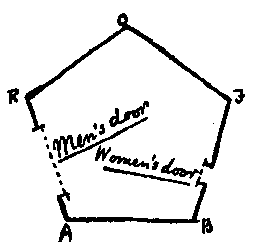

As with you, so also with us, there are four points of the compass North, South, East, and West.
There being no sun nor other heavenly bodies, it is impossible for us to determine the North in the usual way; but we have a method of our own. By a Law of Nature with us, there is a constant attraction to the South; and, although in temperate climates this is very slight — so that even a Woman in reasonable health can journey several furlongs northward without much difficulty — yet the hampering effect of the southward attraction is quite sufficient to serve as a compass in most parts of our earth. Moreover, the rain (which falls at stated intervals) coming always from the North, is an additional assistance; and in the towns we have the guidance of the houses, which of course have their side-walls running for The most part North and South, so that the roofs may keep off the rain from the North. In the country, where there are no houses, the trunks of the trees serve as some sort of guide. Altogether, we have not so much difficulty as might be expected in determining our bearings.
Yet in our more temperate regions, in which the southward attraction is hardly felt, walking sometimes in a perfectly desolate plain where there have been no houses nor trees to guide me, I have been occasionally compelled to remain stationary for hours together, waiting till the rain came before continuing my journey. On the weak and aged, and especially on delicate Females, the force of attraction tells much more heavily than on the robust of the Male Sex, so that it is a point of breeding, if you meet a Lady in the street, always to give her the North side of the way — by no means an easy thing to do always at short notice when you are in rude health and in a climate where it is difficult to tell your North from your South.
Windows there are none in our houses: for the light comes to us alike in our homes and out of them, by day and by night, equally at all times and in all places, whence we know not. It was in old days, with our learned men, an interesting and oft-investigated question, "What is the origin of light?" and the solution of it has been repeatedly attempted, with no other result than to crowd our lunatic asylums with the would-be solvers. Hence, after fruitless attempts to suppress such investigations indirectly by making them liable to a heavy tax, the Legislature, in comparatively recent times, absolutely prohibited them. I — alas; I alone in Flatland — know now only too well the true solution of this mysterious problem; but my knowledge cannot be made intelligible to a single one of my countrymen; and I am mocked at — I, the sole possessor of the truths of Space and of the theory of the introduction of Light from the world of three Dimensions — as if I were the maddest of the mad! But a truce to these painful digressions: let me return to our houses.
The most common form for the construction of a house is five- sided or pentagonal, as in the annexed figure. The two Northern sides RO, OF, constitute the roof, and for the most part have no doors; on the East is a small door for the Women; on the West a much larger one for the Men; the South side or floor is usually doorless.

Square and triangular houses are not allowed, and for this reason. The angles of a Square (and still more those of an equilateral Triangle,) being much more pointed than those of a Pentagon, and the lines of inanimate objects (such as houses) being dimmer than the lines of Men and Women, it follows that there is no little danger lest the points of a square or triangular house residence might do serious injury to an inconsiderate or perhaps absent-minded traveller suddenly therefore, running against them: and as early as the eleventh century of our era, triangular houses were universally forbidden by Law, the only exceptions being fortifications, powder- magazines, barracks, and other state buildings, which it is not desirable that the general public should approach without circumspection.
At this period, square houses were still everywhere permitted, though discouraged by a special tax. But, about three centuries afterwards, the Law decided that in all towns containing a population above ten thousand, the angle of a Pentagon was the smallest house- angle that could be allowed consistently with the public safety. The good sense of the community has seconded the efforts of the Legislature; and now, even in the country, the pentagonal construction has superseded every other. It is only now and then in some very remote and backward agricultural district that an antiquarian may still discover a square house.
Next: Chapter 3